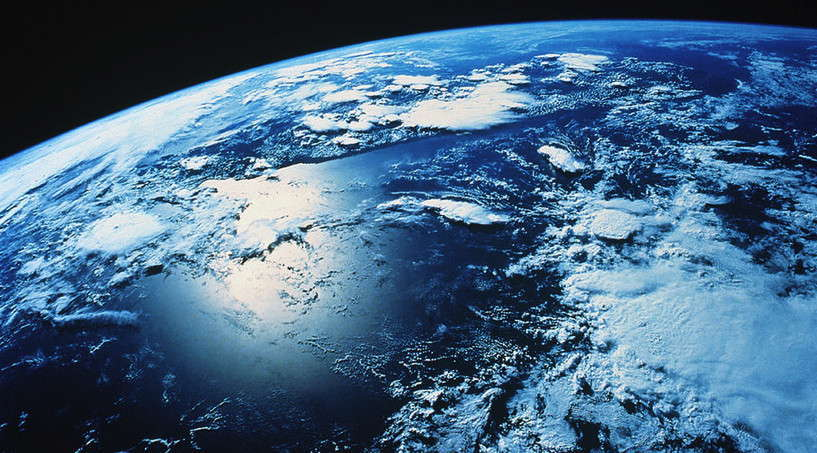
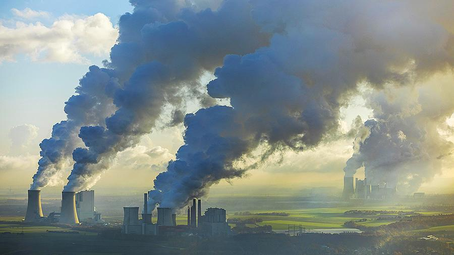
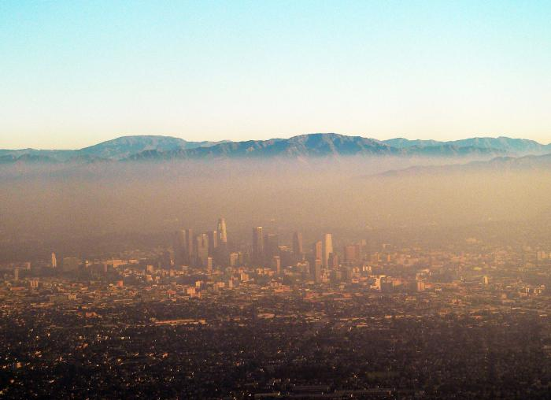

Планетарные геоэкологические проблемы – сложнейшие геоэкологические проблемы, проявляющиеся в пределах географической оболочки в целом, воздействующие на всю планету и представляющие опасность для всего человечества. К их числу относятся «парниковый эффект» и глобальное потепление, «озоновые дыры», подъём уровня Мирового океана и его загрязнение, опустынивание и другие проблемы. Решение таких геоэкологических проблем требует объединения усилий всех государств на основе общей программы действий.
Региональные геоэкологические проблемы по площади распространения и развития уступают планетарным проблемам, но зачастую представляют собой сложный комплекс взаимосвязанных частных геоэкологических проблем. Эти проблемы охватывают геосистемы регионального масштаба и не представляют опасности для всего земного шара, но число таких проблем с течением времени возрастает. Хотя эти проблемы имеют определённые границы территориального развития, недостаточное внимание к их своевременному решению может повлечь серьёзный экологический ущерб.
Региональные геоэкологические проблемы подразделяются на простые и сложные. Проблемы, включающие процессы одного типа, считаются простыми, проблемы же, состоящие из нескольких категорий процессов, выделяются в качестве сложных. Решение сложных проблем требует длительного времени. Они развиваются в сторону внутреннего усложнения и расширения территориального распространения. Простые геоэкологические проблемы, развиваясь во времени и пространстве, могут превратиться в сложные.
Проблема Арала и Приаралья – региональная геоэкологическая проблема Узбекистана и сопредельных государств. Для решения этой проблемы необходимо сотрудничество всех центральноазиатских стран.

Локальные (местные) геоэкологические проблемы - развиваются в меньших масштабах, чем региональные, охватывая небольшие геосистемы, расположенные в пределах одного или двух пограничных государств. Такие геоэкологические проблемы обуславливаются хозяйственной деятельностью населения, нерациональным использованием природных ресурсов, пренебрежением природными закономерностями при вмешательстве в окружающую среду, высокой плотностью населения и иными причинами. Ошибки, допускаемые при осушении болот в условиях влажного климата, орошении земель, строительстве водохранилищ, использовании пастбищ, размещении промышленных предприятий, непродуманные действия при освоении новых территорий и ресурсов приводят зачастую к возникновению и обострению локальных геоэкологических проблем.
К локальным геоэкологическим проблемам Узбекистана относятся: 1) проблемы, связанные с загрязнением атмосферного воздуха в городах и промышленных районах; 2) проблемы в связи с использованием водных ресурсов – скопление коллекторных вод в озёрах, нехватка качественной питьевой воды, загрязнение пресноводных водных объектов и т.д.; 3) проблемы интенсивного использования земельных ресурсов – эрозия, засоление почв, деградация пастбищ и др.; 4) проблемы в связи с техногенными воздействием на геосистемы – скопление отходов горнодобывающей промышленности, нарушение земель, уничтожение пастбищной растительности при передвижении тяжёлой техники и т.д.; 5) проблемы рационального выпаса скота и вырубки деревьев и кустарников; 6) проблемы, связанные с использованием рекреационных объектов; 7) загрязнение окружающей среды вредными химическими веществами.
Научные основы решения геоэкологических проблем. Решение геоэкологических проблем требует системного анализа их основных особенностей, масштаба, этапов, направлений, причин и факторов развития, последствий. При исследовании этих проблем придерживаются территориального, геосистемного и экологического принципов.

Территориальный принцип даёт возможность определить пространственный масштаб проблемы, границы ареала её распространения и развития. При этом учитываются целостность проблемной территории, её взаимосвязь с сопредельными районами.
Геосистемный принцип считается географической основой для изучения геоэкологической проблемы, он даёт возможность анализа структуры проблемной территории и её природных ресурсов. На основе этого принципа учитывается информация о естественных границах геосистем, их пространственных отношениях, их соотношении по высотному положению. Этот принцип используется при оценке геоэкологических проблем, их прогнозировании, обосновании и реализации мероприятий по их решению.
Экологический принцип ставит в центр внимания взаимоотношения живых организмов, прежде всего человека, и окружающей природной среды. Нарушение баланса в этих взаимоотношениях и порождает различные геоэкологические проблемы. В условиях различных геосистем противоречия между обществом и окружающей природой характеризуются специфическими особенностями.
Под решением геоэкологической проблемы следует понимать, прежде всего, восстановление первоначального равновесия в природной среде. При этом восстановление природного (экологического) равновесия – это приближение к изначальному состоянию взаимосвязи и взаимодействия компонентов природы и геосистем, полный возврат же этому балансу невозможен. Восстановление природного равновесия сопровождается мероприятиями по улучшению условий жизни населения. Так, решение сложного комплекса геоэкологических проблем Арала и Приаралья возможно только при одновременном осуществлении комплекса взаимосвязанных мер. При этом первостепенное значение имеет увеличение притока качественной речной воды, что будет сдерживать процесс опустынивания в этом проблемном регионе.
Для решения локальных геоэкологических проблем чрезвычайно важно глубокое изучение природных особенностей территории.
Развитие отраслей хозяйства и природопользования в соответствии с возможностями природных геосистем служит важным путём предотвращения геоэкологических проблем. Например, учёт при орошении земель особенностей используемых геосистем, выбор для разных типов геосистем определённых посевных культур, способов и норм полива, агротехнических мероприятий позволит избежать многих геоэкологических проблем.